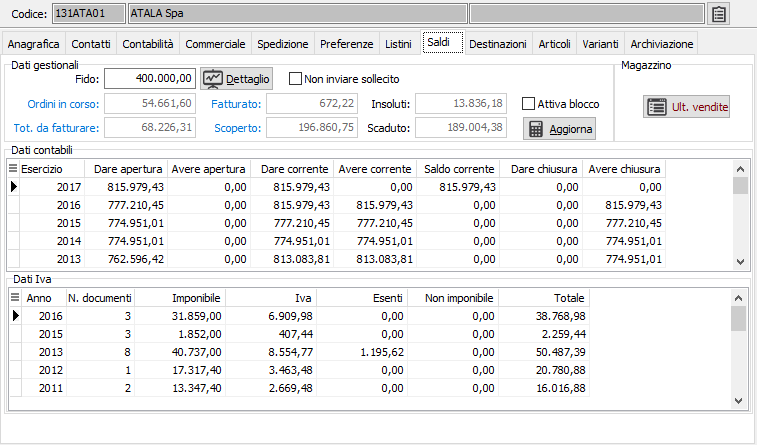

Saldi
La linguetta consente di indicare il fido concesso al cliente e visualizza la situazione di esposizione da parte del cliente nonché i saldi attuali per i vari esercizi contabili esistenti.
Il pulsante Dettaglio richiama l'analisi dei saldi del cliente.
Il pulsante Aggiorna effettua l'aggiornamento immediato dei saldi del cliente ad eccezione del fido. Il pulsante è attivo se è configurata la gestione dei saldi clienti/fornitori manuale o automatica.
Il pulsante Ultime vendite visualizza in una finestra gli articoli venduti al cliente con i dati dell'ultima operazione e ne consente la stampa.

FIDO: inserire l'importo del fido assegnato al cliente.
NON INVIARE SOLLECITO: consente di escludere il cliente nella stampa delle lettere di sollecito (casella con segno di spunta).
ORDINI IN CORSO: contiene il valore degli ordini già acquisiti ma non ancora evasi.
TOTALE DA FATTURARE: contiene l'importo dello spedito non ancora fatturato al cliente.
FATTURATO: contiene l’importo delle fatture emesse ma non ancora contabilizzate.
SCOPERTO: contiene l'importo dello scoperto del cliente.
INSOLUTI: contiene l'importo degli insoluti del cliente.
SCADUTO: contiene la, parte dell'importo scoperto che risulta già scaduto relativo al cliente.
ATTIVA BLOCCO: se la casella contiene la spunta, sarà attivato il blocco sull'emissione dei documenti (imposta lo stato a 7) al momento in cui viene registrato in prima nota un insoluto.